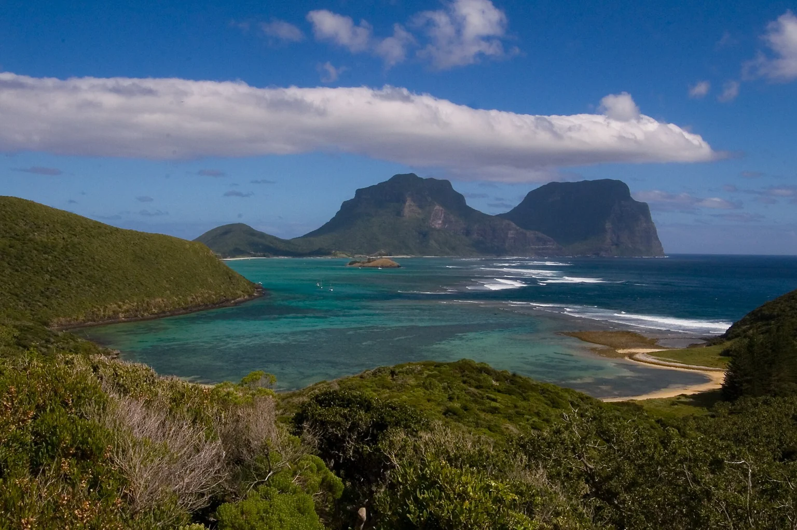

New South Wales, Australia
Lovers Bay & the southern end
Capella Lodge places Mount Gower and Mount Lidgbird in the foreground, with the southern lagoon shaping the view.
New South Wales, Australia
A lagoon below volcanic peaks, island walks and two very different small places to stay.
Your preferences. Thoughtful options. Personal attention throughout.

New South Wales, Australia
Capella Lodge places Mount Gower and Mount Lidgbird in the foreground, with the southern lagoon shaping the view.
Lord Howe Island, Australia
Arajilla sits among trees close to a sheltered beach, with a quieter garden atmosphere.
A few considered examples. Your personal selection extends beyond these pages, with stays and privileges chosen around your preferences.
Lovers Bay, Lord Howe Island, New South Wales, Australia
Nine suites face the lagoon and the island’s twin peaks from its quieter southern end.
Who it suits
Couples and walkers who value a small lodge and a landscape-led visit.
The twin peaks are already there when you sit down to breakfast, giving the morning its scale. Walk towards Lovers Bay, or choose an island outing around the day’s conditions rather than a crowded timetable. After time near the lagoon, a quiet hour at the lodge can be as appealing as another excursion. Dinner changes with the produce available, so the island continues at the table. Leave room for an extra night: flights and the weather deserve a little breathing space here.
Getting there & getting around
Scheduled flights to Lord Howe Island; lodge airport transfers are shared with fellow guests.
Before choosing
Minimum two nights. Lodge closure announced for 6 June–28 August 2027 inclusive; advise dietary needs before arrival.
A different choice
Arajilla Retreat offers a rainforest setting at the northern end of the lagoon instead of this southern panorama.
Details checked · 26 Oct 2026
Old Settlement Beach area, Lord Howe Island, New South Wales, Australia
Suites beneath kentia palms offer a rainforest alternative to Lord Howe’s open coastal viewpoints.
Who it suits
Guests drawn to shade, walking and a more sheltered island base.
Let the first morning begin under the palms, with the beach reached through the greenery rather than across a broad resort terrace. A lagoon outing might fill the brighter hours; a walk towards the island’s northern viewpoints can shape another day. Back at the retreat, the separate living space makes it easy to read while someone else rests. Choose the length of the stay around the flights and the activities you care about, leaving an island afternoon free for whatever the conditions favour.
Getting there & getting around
Arrival by scheduled island flight, with ground transfers arranged for the booking.
Before choosing
Children are accommodated from six years old. Confirm flights, room occupancy and the current dining programme.
A different choice
Capella Lodge is the alternative for an open view towards the southern mountains.
Details checked · 26 Oct 2026
| Property / setting | Style / suggested fit | Main reason to choose it | Accommodation | Facilities | Access / transport | Season / practical considerations |
|---|---|---|---|---|---|---|
| Capella Lodge Lovers Bay, Lord Howe Island, New South Wales, Australia | Small island lodge | Nine suites face the lagoon and the island’s twin peaks from its quieter southern end. | Nine suites create a small lodge rather than a large island resort. | A contemporary beach-house setting looks towards Mounts Gower and Lidgbird. | Scheduled flights to Lord Howe Island; lodge airport transfers are shared with fellow guests. | Minimum two nights. Lodge closure announced for 6 June–28 August 2027 inclusive; advise dietary needs before arrival. |
| Arajilla Retreat Old Settlement Beach area, Lord Howe Island, New South Wales, Australia | Rainforest suites | Suites beneath kentia palms offer a rainforest alternative to Lord Howe’s open coastal viewpoints. | Suite choices include separate living space and two-bedroom accommodation. | A path gives access through to Old Settlement Beach. | Arrival by scheduled island flight, with ground transfers arranged for the booking. | Children are accommodated from six years old. Confirm flights, room occupancy and the current dining programme. |
Browse Hotels & Private Stays ↗ · Private villas & group stays ↗
A selection to inspire your next evening. In every destination, we shape a shortlist around you, with further tables, experiences and privileges shared personally with our clients. Tell us your taste; your time is ours to look after.
Explore by cuisine & occasion ↗
One reservation or every evening of your stay. A wider world of possibilities, shared personally and arranged around you.
Tell us when you will be here. We will share occasions and experiences to shape your time around.
Browse Events & Experiences ↗Begin with the lagoon rather than a road itinerary. A walk, a swim and a long lunch can be enough for a first day; a more demanding guided outing can take its place later.
Flights and the island’s small accommodation supply deserve early attention. The choice between the southern mountain view and the northern garden setting should come before the final room decision.
Our attention continues beyond the reservation. Contact us 24/7 during your stay, including for a change of plan or a spontaneous idea. We explore suitable options and confirm the arrangements you choose.
Tell us which place or property appeals. Approximate dates and an idea are enough to begin.
Begin an EnquiryContact us 24/7. Our team will respond personally; email info@zelrocprive.com whenever it suits you.
A little inspiration—or something already in mind?